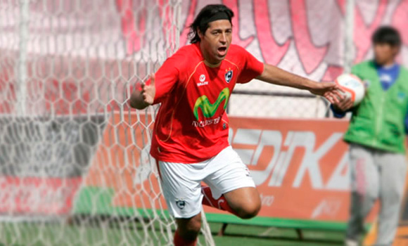
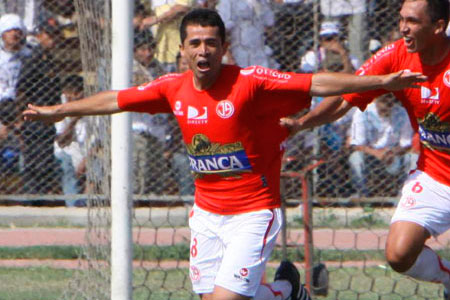

- 
Bienvenido
Bienvenidos a la Pagina Web de Pichling Representaciones. Somos una empresa de representación de Jugadores y Técnicos de futbol, que trabaja con Agentes asociados en Argentina, Colombia y España. Caracterizados, todos, por la seriedad, confiabilidad y transparencia en sus operaciones. Esperamos que la información que mostramos sea de su interés y les sirvan como base para iniciar conversaciones sobre futuros negocios con nuestros representados.
Muchas gracias por su visita y estamos a su disposición para cualquier consulta.
Pedro Ascoy
En diálogo con Ovación Digital, Pedro Ascoy se mostró muy satisfecho con el presente que viene teniendo con Manta de Ecuador, en donde el fin de semana anotó su primer gol. En esta entrevista, el Burrito no ocultó su tristeza porque le hubiera gustado vivir esta experiencia un poco más joven y dijo sin pelos en la lengua que no entiende por qué Sergio Markarián nunca lo tomó en cuenta para la Selección.
- Hasta que por fin se te abrió el arco...
- Sí, demoró un poco, pero tengo la tranquilidad que vengo haciendo bien las cosas en Manta. Ahora tengo que seguir trabajando fuerte para seguir gozando de la confianza del técnico.
- En Manta comenzaste como titular, pero luego el técnico te utilizaba como pieza de recambio, ¿por algo en especial?
- No, simplemente fueron por disposiciones tácticas. Sucede que el 'profe' elige a los jugadores dependiendo de rival, pero lo importante que cuando me toma en cuenta trato de no desperdiciar mi oportunidad. Por ejemplo, ante Independiente de Terán ingresé y aseguré el triunfo.
- En el gol que anotaste, el narrador se lo asignó a otro jugador...
- (Risas) Sí, me confundió con otro jugador con quien me parezco mucho, incluso este compañero se abrazó con el asistente técnico y eso terminó por confundirlo.
- ¿En qué posición vienes jugando?
- Como volante por izquierda, como delantero por los costados..., yo realmente me ajusto a lo que me diga el entrenador.
- ¿Qué torneo es más competitivo: el peruano o ecuatoriano?
- Sinceramente me quedo con el ecuatoriano, porque casi todos los equipos tienen saneadas sus economías, los sueldos son buenos y, sobre todo, pagan puntual.
- Y en la parte futbolística...
- También. Acá se juega con mayor fuerza y dinámica, no es fácil acoplarte al fútbol ecuatoriano porque se juega mucho en ciudades de altura.
- Pero, tú ya estás acoplado...
- Sí, yo me siento muy feliz porque acá sigo creciendo como profesoional, aunque triste a la vez porque me hubiera gustado vivir esta experiencia más joven. Por lo demás, esta ciudad es muy parecida a Chiclayo, hay playa, sol y su gente es muy buena.
- ¿A qué apunta Manta?
- A seguir siendo protagonista en el campeonato, estamos sólo a cuatro puntos del puntero que es Emelec. La consigna es terminar entre los seis primeros para pelear también un cupo a un torneo internacional y creo que equipo tenemos para lograrlo. Ahora tenemos que ir a Ambato y esperamos sacar un buen resultado.
- El tema de llegar a la Selección peruana sigue presente...
- Eso lo veo cada vez más lejano.
- ¿Por qué lo dices?
- Porque cuando pude ser convocado, no me dieron la oportunidad. Recuerdo que hice una buena Copa Libertadores, jugué bien con Juan Aurich, pero el profesor Markarián nunca me tomó en cuenta. No me explico por qué, incluso mi amigo Chiroque y los diferentes entrenadores que pasaron por Aurich, como Juan Reynoso, me decían que Markarián me iba a llamar, pero eso jamás ocurrió. No sé qué pasaba por la cabeza de Markarián. Por ello, le deseo lo mejor a todos los que llegan a ser convocados, porque todos no gozan de ese privilegio. Yo simplemente trabajaré fuerte en mi equipo para seguir creciendo como profesional y a la distancia le daré las vibras positivas para que le vaya bien a la Selección peruana.
Fuente: OVACION